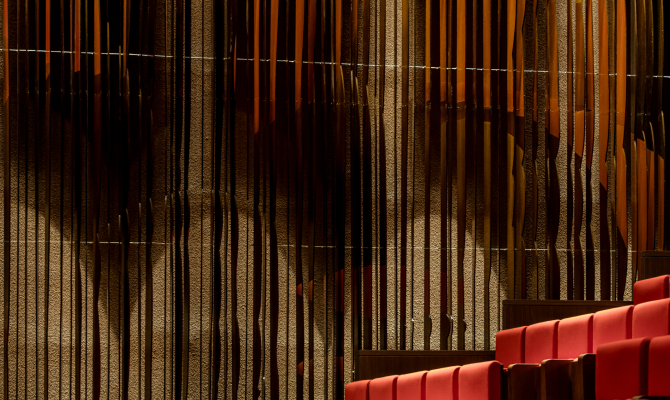
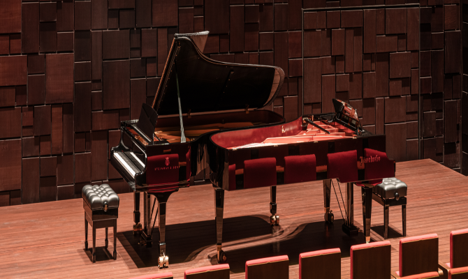
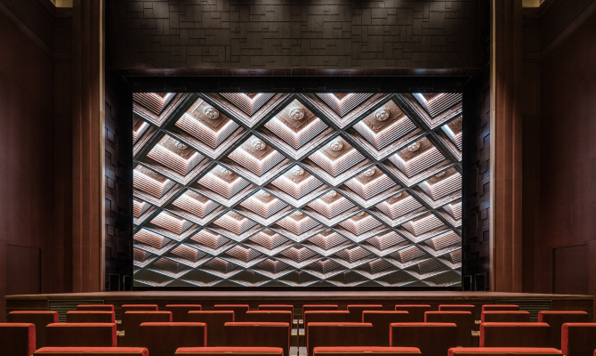
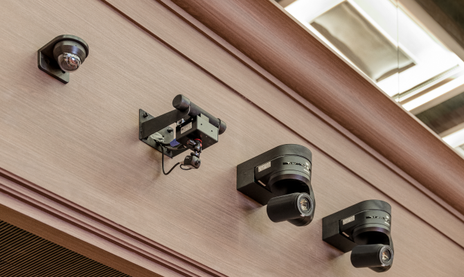
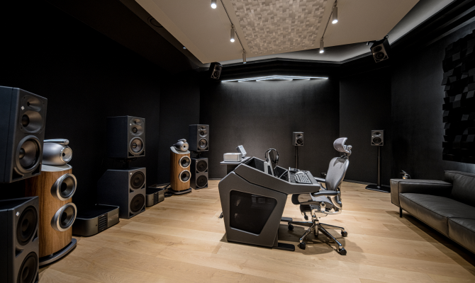
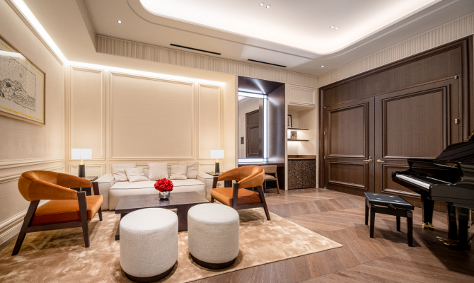
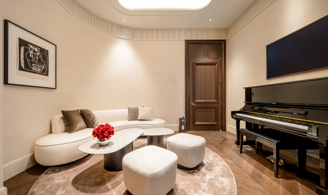
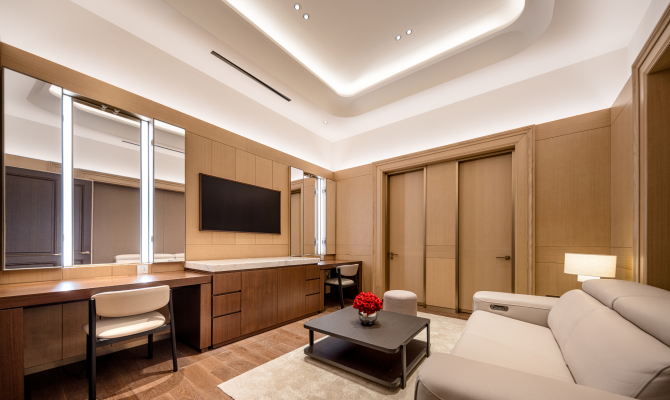
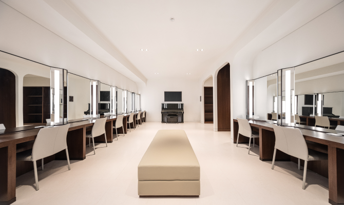

공고 (정기,수시)
대관신청
심사
승인통보
계약

26개의 스피커를 설치하여 서라운드 입체음향을 구현하였고, 대중음악 공연과 같이 공연장을 꽉 채우는 소리를 요구할 때 활용 가능한 라인 어레이 스피커도 추가로 갖추고 있습니다. 천장과 양 벽면 및 후면에 에 흡음 커튼과 롤러 배너가 인테리어 내부에 숨겨져 있어 클래식, 세미나, 대중음악 등 어떠한 장르에도 알맞은 울림의 변형이 가능할 뿐 아니라 디자인적으로도 감동적인 공간 설계를 느껴 보실 수 있습니다.

베토벤 해석의 최고 권위자인 피아니스트 겸 지휘자 안드라스쉬프(Andras Schiff) 등 아티스트와의 협력을 통해 피아노 셀렉션을 진행했습니다. 뵈젠도르퍼(Bosendorfer) 280VC, 스타인웨이(Steinway & Sons) D-274, 2종의 피아노를 보유하고 있습니다.


베토벤 해석의 최고 권위자인 피아니스트 겸 지휘자 안드라스쉬프(Andras Schiff) 등 아티스트와의 협력을 통해 피아노 셀렉션을 진행했습니다. 뵈젠도르퍼(Bosendorfer) 280VC, 스타인웨이(Steinway & Sons) D-274, 2종의 피아노를 보유하고 있습니다.
세계적인 아티스트 공연에 필수 요소로 꼽히는 자동화 FOLLOW ME TRACK-IT 시스템을 국내 공연장 최초로 도입한 것도 주목해야 할 부분입니다. 센서를 몸에 지닌 출연자를 자동으로 트래킹 하며 빛의 크기, 모양, 조도 등을 조절할 수 있습니다. 모든 기종의 MOVING LIGHT에도 적용 가능하며 제어할 수 있는 MOVING LIGHT의 수량 또한 무한합니다. 오퍼레이터가 직접 조명 기기를 제어할 수도 있으며, 3D툴을 이용해 무대의 영역을 설정하면 빛이 닿지 않아야 할 곳을 쉽게 제어할 수 있습니다.

트리니티홀과 연동된 별도의 스튜디오가 마련되어 있습니다.
Dolby 社의 인증을 받은 3D 서라운드 입체음향 편집과 고품질 녹음 시스템을 활용한 192kHz 이상의 초고음질로 녹음할 수 있습니다.
좌석을 없앤 히든 형태의 트리니티홀은 리사이틀부터 120인조 오케스트라까지 다양한 규모의 녹음 대관이 가능합니다. 이와 연동하여 실시간 녹음이 가능하며
인터넷 라이브 스트리밍을 하는 경우 스튜디오를 중계실로 활용할 수 있습니다.
총 5개의 대기실은 편안한 휴식과 연습을 위한 최적의 환경을 제공합니다.
4개의 주역 대기실과 1개의 단체 대기실 모두 흡음 마감재를 사용한 방음 구조로 대기하는 동안 개인 연습할 수 있는 환경을 구축하였습니다.
주역 대기실의 바닥은 공연장 바닥과 동일한 목재를 사용하여 대기실에서도 공연장과 동일한 울림을 느낄 수 있습니다.

대기실 1
메인 연주자를 위한 개인 대기공간 (12평)
대기실 2
메인 연주자를 위한 개인 대기공간 (8평)
대기실 3,4
1-2인을 위한 개인 대기공간 (8평)
대기실 5
최대 20명까지 수용 가능한 단체를 위한 대기공간 (21평)